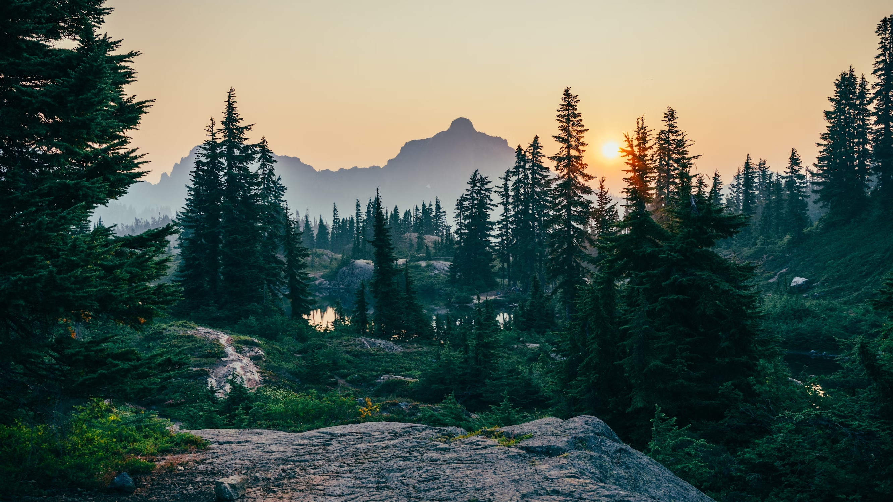

20 year anniversary!
King Elessar Telcontar looks back on two decades on the throne
A member of the Fellowship of the Ring, hero of Helm's Deep, Pelennor Fields, and the Battle of the Morannon — King Aragorn II has come a long way from his Strider days.
Take a stroll through memory lane as we list the top 10 moments of our beloved King. Some obvious choices, but some that may surprise you!
Blue wizard spotted?
One of the long lost Blue Wizards rumoured to have been seen in the East
Centuries after vanishing off the face of Middle-earth, is it possible that one of the Blues has returned?
Shire: Mayor Gamgee wins third term
Samwise Gamgee elected as Mayor of Michel Delving for a third time
Honoured hero and father-of-twelve has proven yet again that he has the hobbits' trust. One can only assume that time-management is one of his biggest strengths!
Marvelous architecture revealed
Osgiliath restoration offers a window to the glory of the past

Lonely Mountain no longer as lonely
Bilateral trade and tourist relations between Erebor and Gondor on steady increase
